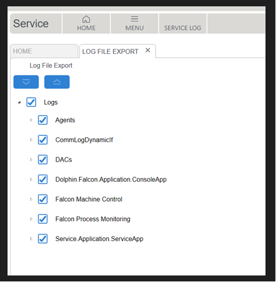

Exporting Log Files Using the Service App
| Table of Contents |
|---|
| Situations and Suggested Files |
| Log File Export Page |
| Available Log Files |
Situations and Suggested Files
| Situation where additional data might be needed to support further investigation | Suggested files to obtain |
|---|---|
|
A software anomaly (a.k.a. a "bug") is suspected. For example:
Note: If the anomaly has already been documented in the DxI 9000 Access Immunoassay Analyzer Release Notes or in existing service manual documentation, no additional files are required.
|
|
|
A software or system design issue that has NOT been identified in service documentation is suspected to be affecting instrument performance or test processing. For example:
|
|
Log File Export Page
The Log File Export page allows the user to export various log files from the system for external/offline analysis.
To access the Log File Export page, in the Service App go to .

| 1 | Log Folder/File Selection Area | Allows user to select the desired log files they wish to export. |
| 2 | Export Options |
|
| 3 | Export Button | Generates log file export for the selected folders/files. User will receive a pop-up dialogue to select export location (will vary depending on .zip file vs. standard folder structure).
Note: If executing the Log File Export from Windows LabUser profile, a pop-up message will be received stating "The operation has been cancelled due to restrictions in effect on this computer." Select
OK to clear the message (may need to be selected 4-5 times) and the save dialogue box will eventually be visible.
|
Available Log Files
| Log File Directory | Description |
|---|---|
| Agents |
|
| DACs |
Contain information for database and various tables. Logs are separated by logical areas such as: SampleDAC (patient sample information) and CalibratorDAC (calibration sample information). |
| Falcon Machine Control |
Detailed traces of physical instrument control. |
| Falcon Process Monitoring |
|
| Service Application ServiceApp |
Logs generated on service application communication. Does not impact field service. |